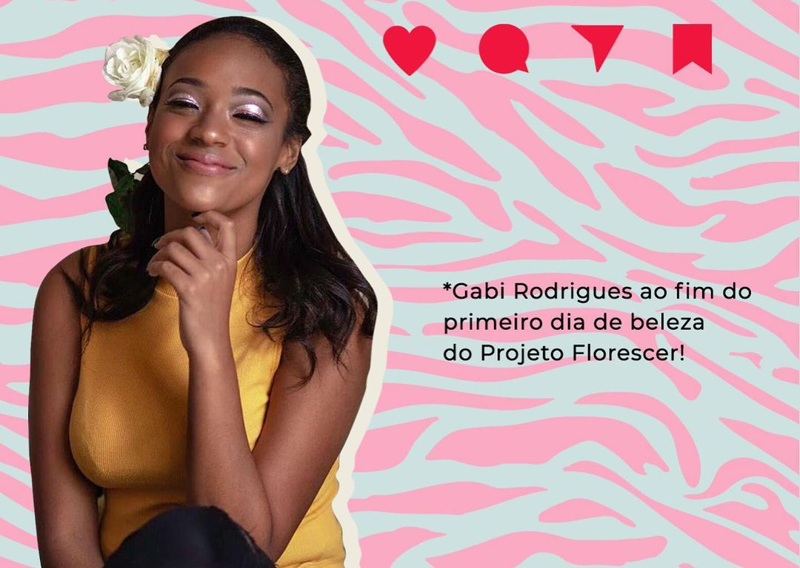

Relatos
Gabrielle Rodrigues
Meu nome é Gabrielle Rodrigues, tenho 18 anos e há 3 anos atrás, no auge da minha adolescência, eu me sentia completamente fora dos padrões e isso me deixava muito mal, eu sofria na pele a dor da baixa-autoestima e tudo que ela traz de pesado para as nossas vidas. Até que uma amiga minha que sabia dessa fase que eu estava enfrentando, me convidou para participar de um “Dia da Beleza” do Florescer. Coincidentemente, era a primeira ação do projeto, e eu fui a primeira assistida cadastrada.
O Florescer me fez enxergar quem eu sou fora dos padrões, mas que isso não me fazia alguém sem beleza, e pelo contrário, me fazia alguém com uma beleza única, então na primeira ação me senti linda e incrível!
Esse dia ficou enraizado e marcado no meu coração, e depois senti a necessidade de ajudar e fazer com que outras meninas se sentissem lindas e especiais, assim como eu me senti naquele dia. Hoje sou vice-presidente do Florescer, atuo como Orientadora da Ouvidoria Feminina e Supervisora - do setor de Urgência, e é um privilégio estar aqui ajudando tantas pessoas.
Realizei o sonho de poder ajudar outras meninas a se sentirem felizes com elas mesmas. Eu amo o Florescer e tudo que estamos construindo, e acredito que a minha história reforça uma das metas do projeto, que é transformar “vítimas" em “revolucionárias”, e eu sou a prova viva de que o Florescer faz isso na vida de quem passa por aqui!”